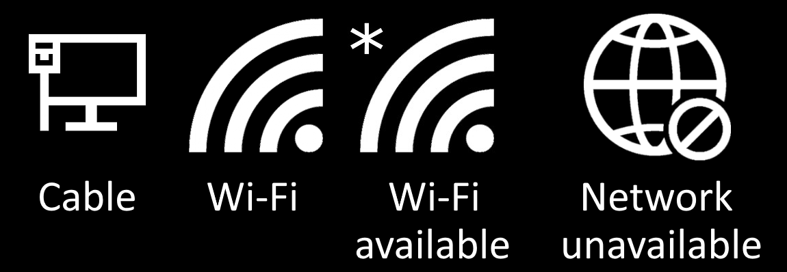

Network Connection Guide
If a tech is unable to get to you at the moment and you are having problems with printing, accessing
a website you currently use, or having internet problems in general, try following these steps
to check and change your network connection and see if that resolves your problem.
-
First look for these following symbols in the bottom right hand corner of your screen.

Depending on the symbol you see take the following steps:
- Cable: If you see this symbol you should be connected to the network and should
be able to print as well as access everything else. If that isn't the case it may be a
larger problem with the network and it is best to wait for a tech to take a look at your
issue.
- Wi-Fi: If you see a wifi symbol it is best to click on it and check to see what network
you're connected to. If you're connected to BCS_Guest try moving to BCS_Wireless
as our printers and certain websites are blocked on BCS_Guest so they can't be used by
our students.
- Wi-Fi Available: If you see this symbol that means that there is a wifi network available
but you simply aren't connected to it. To fix this click the symbol in the bottom right hand corner
and connect yourself to BCS_Wireless.
- Network Unavailable: If you see this symbol that means that for some reason your device
is unable to see or connect to any network. In this case it would be best for you to follow
Power Cycling The Device.
-
If none of the following steps were able to fix the issue you are having wait for a tech
to come and assist you.